BindCraft
Designs binders against a target structure and filters them.
BioPortal is a web frontend for five molecular models running on shared GPUs at the Jülich Supercomputing Centre. Sign in with your JSC account, fill in a form, and collect your results when the job is done.
Designs binders against a target structure and filters them.
Samples an ensemble of conformations rather than one structure.
Full structure prediction from a single protein sequence.
NVIDIA Proteina-Complexa binder generation against a target.
Generates molecular designs from an official RFD3 input object.
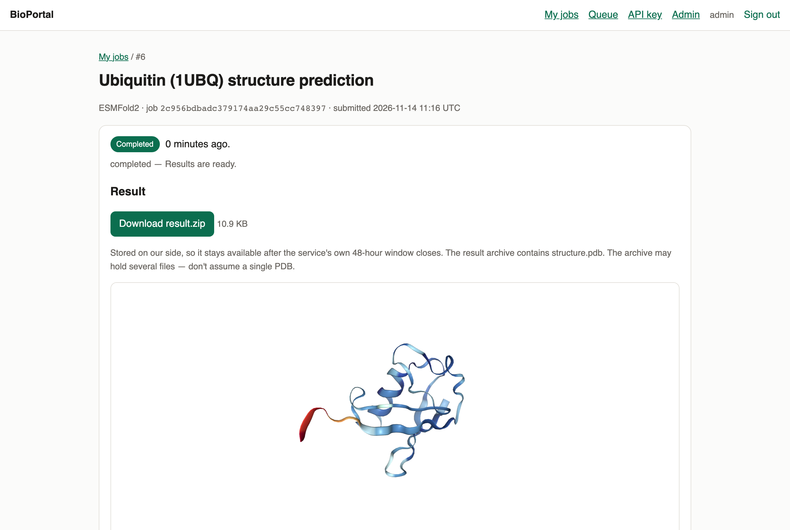
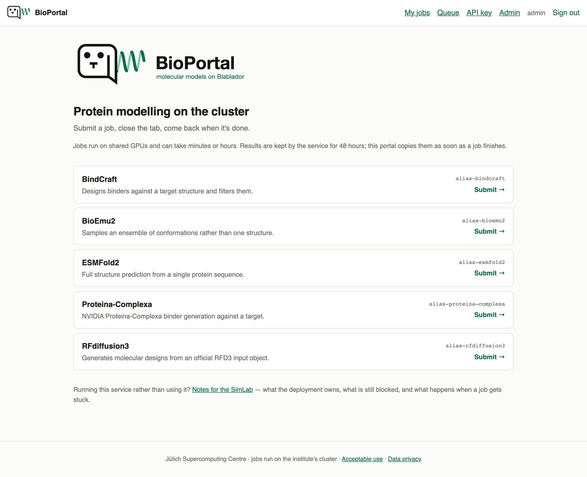
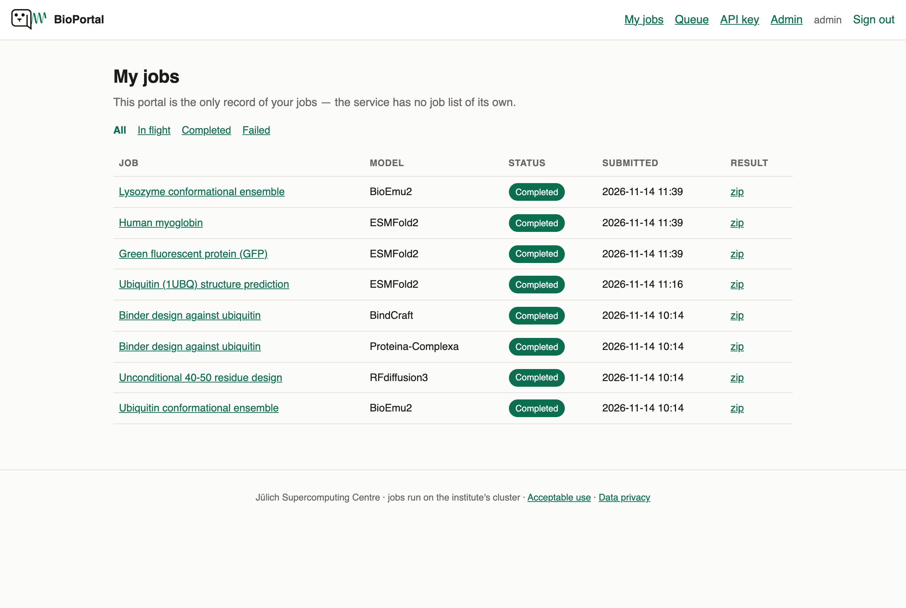
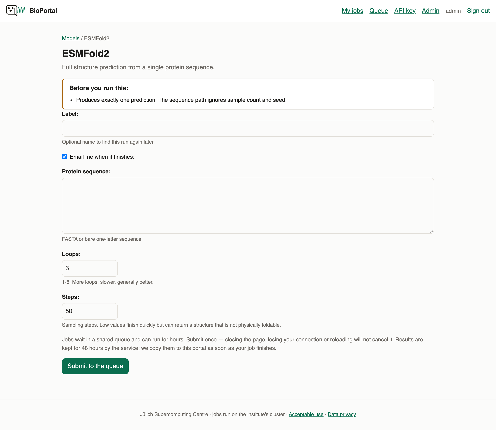
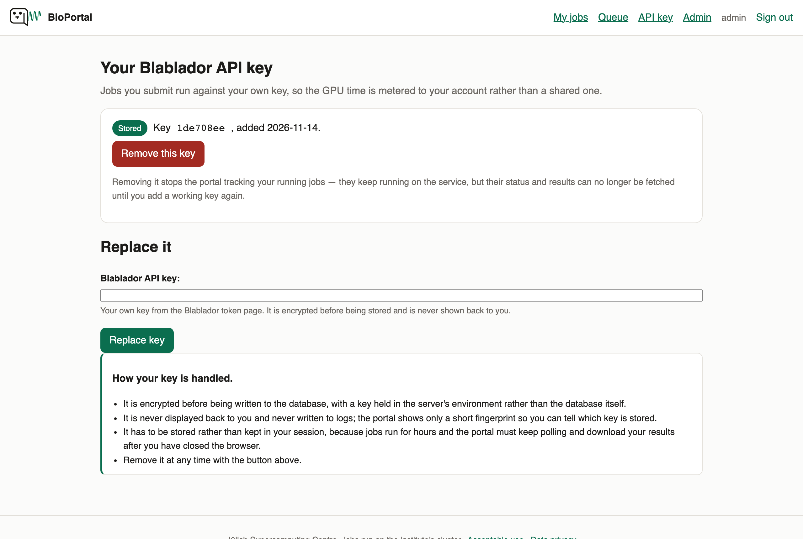
Real output from each model, run through the portal. Structures are drawn with NGL.
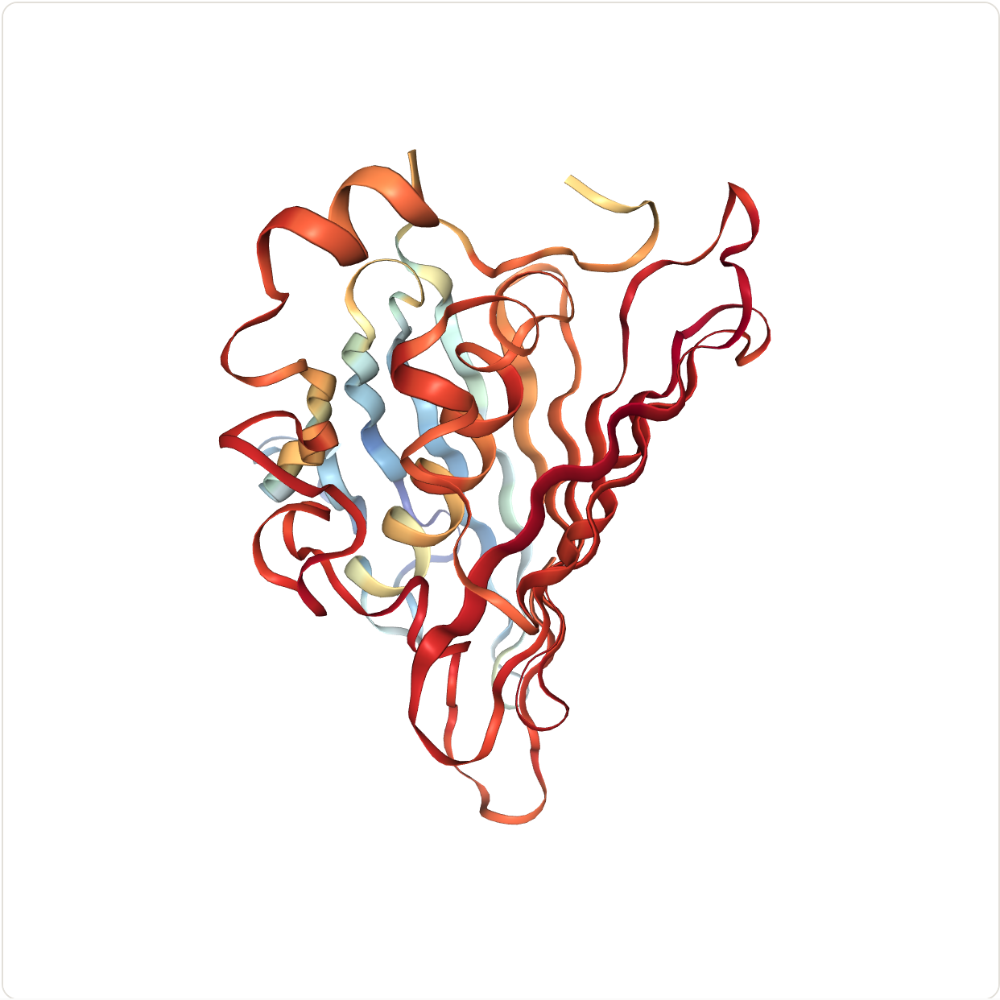
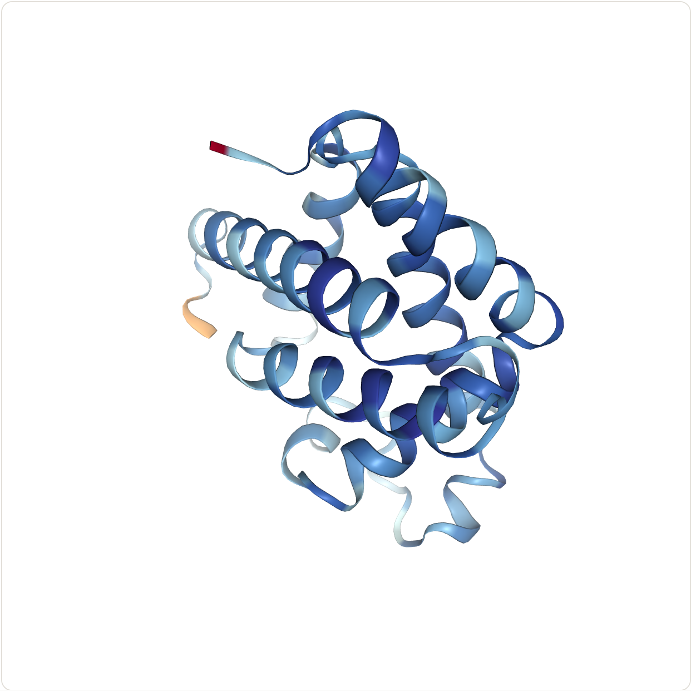
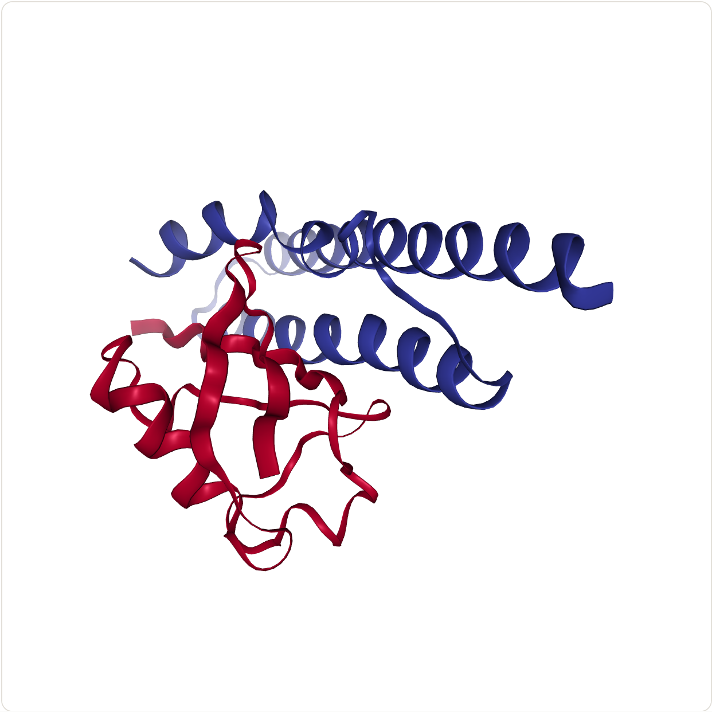
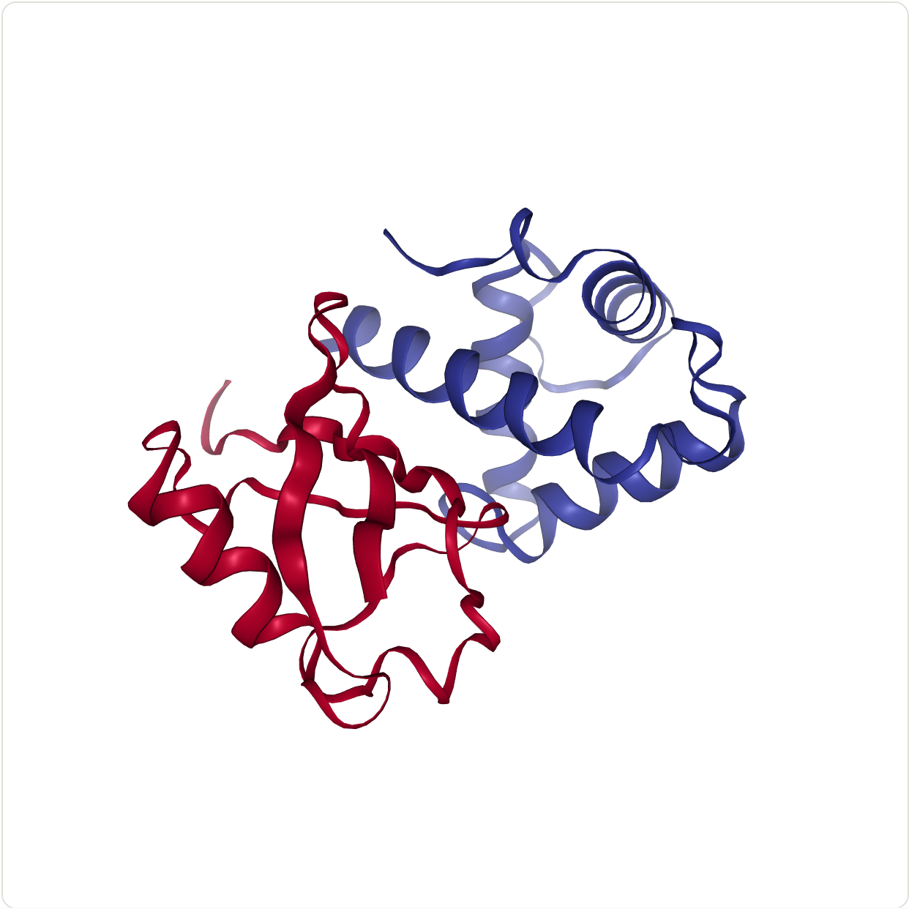
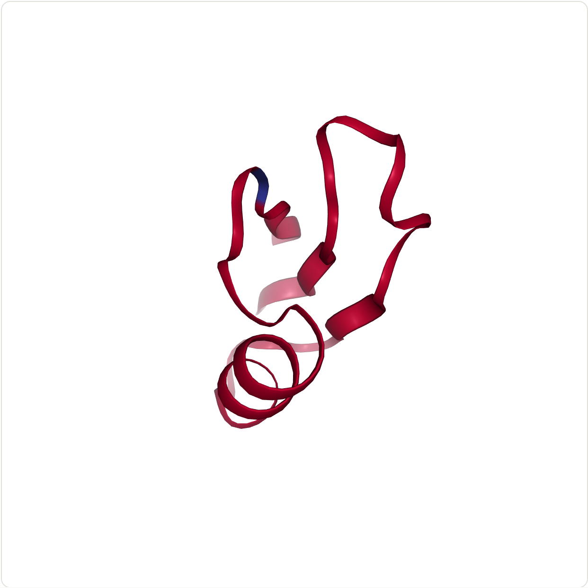
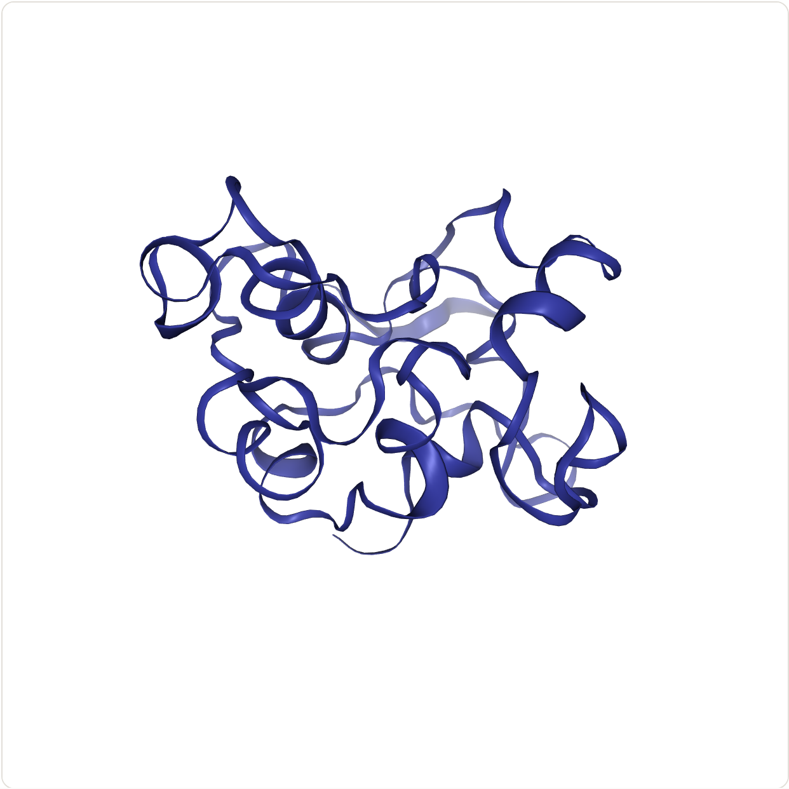
A job can finish, report success and return a well-formed file that is still not a foldable protein — too few sampling steps will do it. The portal measures the distance between consecutive backbone atoms, which chemistry fixes at about 3.8 Å, and tells you when a result does not meet it. Passing that check does not mean the prediction is correct; failing it means the result is certainly unusable.
While a job is queued you are shown your position in the queue and why it is waiting — for a free GPU, or for a worker for that model. While it runs you are shown whatever stage the service reports.
There is no progress percentage and no estimated finish time. The service does not calculate them, so BioPortal does not invent them. Queue position tells you the order requests were accepted; it is not a promise about when yours will start, because a job needing fewer GPUs can legitimately start before one ahead of it.
Before you can submit anything you must store your own Blablador API key on the API key page. Jobs run against your key, so the GPU time is metered to your account rather than a shared one.
The key is encrypted before being stored and is never shown back to you — the portal displays only a short fingerprint so you can tell which key is in use. It has to be stored rather than kept in your browser session, because the portal needs it to follow your job and download your results hours later, after you have closed the page. You can remove it at any time; removing it does not stop jobs already running, but the portal can no longer track them or fetch their results until you add a working key again.
The molecular service deletes results 48 hours after a job reaches a final state. BioPortal fetches your archive automatically as soon as your job finishes, so you do not have to race that deadline. If an archive was lost before it could be copied, the job page says so plainly rather than showing a broken link — the job would have to be re-run.
You can cancel a job from its page. A queued job is normally dropped straight away. A running job keeps going until its process actually stops, so its status reads cancelling for a while — and a job can still finish if it beats the cancellation. Closing your browser tab is not a cancellation.
Inputs and results are stored on shared institute servers while a job is processed and during the retention window. This is not a nothing-touches-the-server service; do not submit material that may not be stored there.